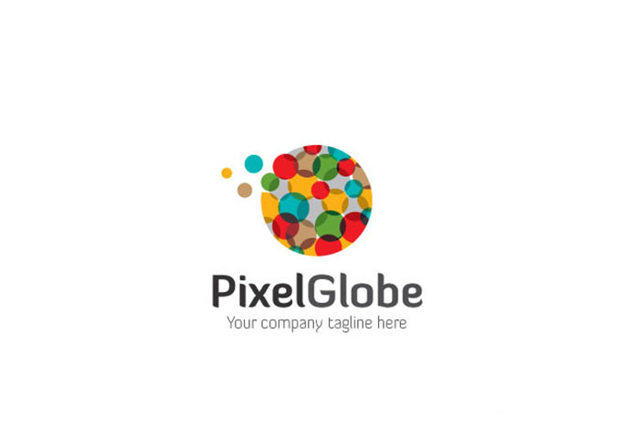

随着社会的发展，标志的重要性体现在各个领域。标志设计是品牌设计的重要组成部分，点、线、面、图形与肌理等基本要素是我们在设计中经常见到的，在标志设计中亦是如此，若采取创新手法对一些基本要素加以使用，会产生丰富的表达效果。
在众多表现手法中，平面构成是设计专业学习者最早接触且运用最多的。在标志设计中，我们不难发现，大量成功的标志采用了点、线、面、图形与肌理的表现手法。平面构成中的点、线、面、图形与肌理等看似简单的表现手法，在现代设计中是最基本的表现形式，同时也是应用最广泛的，让人眼前一亮。
点
在平面构成中，点的概念是相对的，点可以是圆的、方的、三角的等，甚至还可以是各种具象的形态，任何相对细小的形态都可以被看作点。点处于不同位置便发挥着不同的作用。如果点在画面的正中间，我们就能简单地看到一个单纯的画面。
假如点不在画面正中间，而是在其他位置，就会表现出在不同位置所发挥的不同作用。将大小不等、颜色不同的点进行组合、叠置，每个点在各自的位置发出自己的声音，又相互制约与协调，构成一段主次分明的点的旋律。
在标志设计中，设计师只要合理地运用点，就可以表现出点所具有的独特的语言：运动、灵动、纯粹感、融合感、装饰、想象等。设计师可以通过点的大小、疏密、方向、色彩等不同的组合排列展现出点的不同的设计语言。

在现代标志设计中，运用点为设计元素的精彩标志非常多。通过点的重复、大小的变化组合图形及色彩，表现了点的融合感、自由感，通过颜色的变化表现出其绚丽感，也表现了点的装饰感。

线
线是点移动的轨迹，线有长度、方向和形状。在康定斯基看来，线是点在运动中留下的轨迹，源于运动；线的内在声音表现为张力和方向；直线、折线、曲线的张力和方向不同，内在声音就有简单和复杂之分。由此可见，线是有感情的，是富有情趣的。
直线能够使人联想到秩序、平和、坚硬等，曲线能够让人感到自由、流畅、优雅等；粗线能使人感受到力量感，细线能给人以锐利感。
设计师可以运用各种手段和工具营造出不同感觉的线的排列或组合。线的美感在现代标志设计中的运用也可以十分巧妙。用自由无规则的线绘制出人物图形，加上颜色的变化，整个标志给人以放松的感觉。
面
面可以理解为点的放大、点的重复或点的密集。线也可以围拢成面，线加粗到一定程度也被认为是面。面有大小、虚实、抽象和具象之分，各种不同的表现方式体现了不同的性格和感情，体现了相应的意义变化。
面具有多元化的表现方式，如几何形、有机形、偶然形、面的叠加等，所表现出来的是完全不一样的“表情”。
在标志设计中亦是如此，设计师通过面的多元化的、丰富的表现方式，传达着不同的语言信息。在现代标志设计中，可以通过面的明暗、叠加关系的处理，塑造出空间层次。运用了面的色彩分割与组合，通过图形的形态与色彩的变化使整个标志显得活泼且具有趣味性。
图形和肌理
在现代标志设计中，图形的肌理效果开始流行，即所谓的触感标志。触感标志能唤起人想要触摸的感觉。这需要设计师大胆尝试各种材料和手法，对肌理进行恰当处理，创作出能够吸引眼球的标志。在众多的表现形式中，点、线、面、图形与肌理只是其中一部分，现代标志设计对各种形式的综合运用，让标志大放异彩。通过色彩、图案等表现形式，标志设计的现代感表现得非常强烈。
品质在细节中彰显，标志可谓门面，无论是公司还是商品、团体组织的标志，人们往往在认识它的第一眼，内心就为其品牌打出了分数。随着设计方式的多样化发展，创新思维的活跃，继续传承、创新发展标志设计是新一代设计师肩负的使命。
点、线、面、图形与肌理等基本元素在标志设计中的运用很广泛。简单元素的多变排列让标志设计越来越多彩，并朝着多元化的方向发展。设计师应当以一颗大胆变革与创新的心，让简单的平面构成元素在标志设计中幻化出时代的新色彩。


济南海右博纳品牌营销咨询有限公司
Copyright 2001-2019 All Rights Reserved Sivibrand.
王伟品牌顾问微信